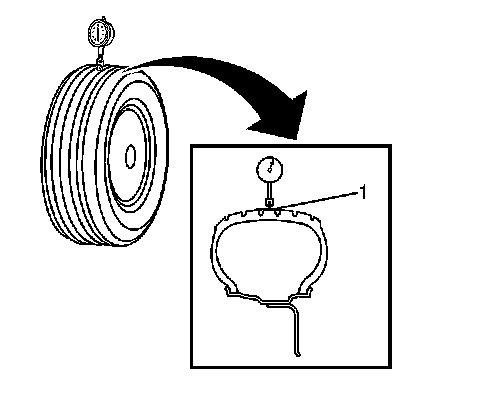
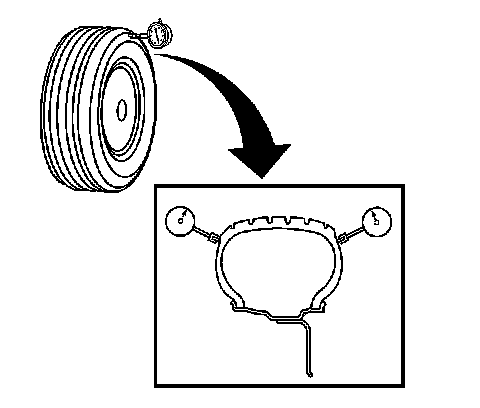

Tire and Wheel Assembly Runout Measurement - On-Vehicle
Tire and Wheel Assembly Runout Measurement - On-Vehicle
1. Raise and support the vehicle.
2. Closely inspect each tire for proper and even bead seating.
3. If any of the tire beads were not properly or evenly seated, reseat the tire bead, then proceed to step 4. Refer to Tire and Wheel Removal and Installation (Service and Repair) .

4. Wrap the circumference of each tire with tape (1) in the center tread area.
Wrapping the tread with tape allows for a smooth and accurate reading of radial runout to be obtained.
5. Position the dial indicator on the taped portion of the tire tread such that the dial indicator is perpendicular to the tire tread surface.
6. Slowly rotate the tire and wheel assembly one complete revolution in order to find the low spot.
7. Set the dial indicator to zero at the low spot.
8. Slowly rotate the tire and wheel assembly one more complete revolution and measure the total amount of radial runout.
Maximum tire and wheel assembly radial runout - measured on-vehicle: 1.52 mm (0.060 in)

9. Position the dial indicator on a smooth portion of the tire sidewall, as close to the tread as possible, such that the dial indicator is perpendicular to the tire sidewall surface.
10. Slowly rotate the tire and wheel assembly one complete revolution in order to find the low spot. Ignore any jumps or dips due to sidewall splices.
11. Set the dial indicator to zero at the low spot.
12. Slowly rotate the tire and wheel assembly one more complete revolution and measure the total amount of lateral runout. Ignore any jumps or dips due to sidewall splices and attain an average runout measurement.
Maximum tire and wheel assembly lateral runout - measured on-vehicle: 1.52 mm (0.060 in)
13. Repeat steps 4 through 12 until all of the tire and wheel assembly radial and lateral runout measurements have been taken.
14. Lower the vehicle.